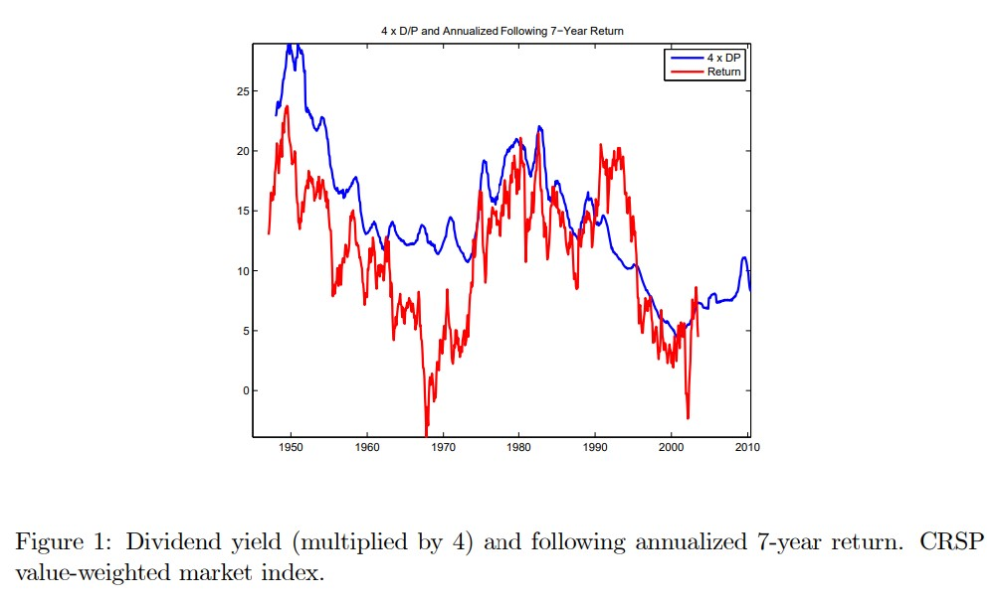

import pandas as pd
import numpy as np
import matplotlib.pyplot as plt
%matplotlib inline
13. Timing Strategies¶
Timing strategies use some signal to change the exposure to a specific asset. So it goes between cash and the asset.
The most classic timing strategies are motivated by a forecasting relation
Market Timing
For example this below is a very classic plot in finance.
It shows the dividend-yield of the stock market overlayed with the future 7 year returns 
It tell us that in this sample, periods when the dividend yield was high were periods were the returns were really high going forward
This might be intuitive to you, but it is really a fact that puzzled lots of people and earned people a few Nobel Prizes.
It tells us that when the price (per dividend) is low what actually happens is nto that the dividends go down going forward, but instead prices go up.
So the EXPECTED returns to invest in the market change a lot overtime.
A quantitative tradign strategy that exploits this would have weights that depend on the dividend yield signal.
for example you would have a weight
on the market excess return,so your strategy return is
Where you would use c to control your average exposure to the market
This turn out not to work very well in practice because this predictability relation is not very stable. To get this nice relation you really neeed to look at very logn returns, but taht means that your sample is kind of small. (rouchly speaking in 35 year sample you only have 5 truly independent data points)
First lets us go back to the mean-variance optimization framework that we studied before to get some intution
Theoretical intution
Lets consider the problem of this mean-variance investor that allocates between a risky asset (the market) and a risk-free asset. (For convenience the risky asset will already by an excess return, but that doesn’t matter)
The only difference from section 10 is that now it is only one risky asset, so this is particular case of that problem. You might recall how \(\gamma\) determined the sum of the weights there.
In a sense it is all that we are solving for now. It is like we already decided what out risky protfolio looks like and we are jsut deciding how mcuh to invest in it.
The other important differces is the t subscripts. What does that mean? It means that know you try to account for time-vriation in the distribution of returns.
You only time an asset if this conditioanl expectations vary. Otherwise what is the point?
The solution to this problem is super simple
So you invest proportionally to the risk-return trade-off
You invest more when you get a lot of premium per unit of risk.
Empirically, this formula turns out to be quite robust to a whole variety of preferences and complciated enviroments/distributions
The market timing strategy above ignores time-variaiton in risk completely (the denominator) and focus only on variaiton in the numerator. The other extreme is to ignore variaiton in expected returns and focus on variaiton in voaltiltiy which we can actually can do very well empirically.